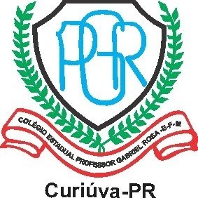

Educação Digital
Uso consciente e criativo das tecnologias, pesquisa digital, programação, inteligência artificial e cidadania digital.
Saiba mais →
Colégio Estadual Professor Gabriel Rosa
Este espaço apresenta projetos, conhecimentos e experiências relacionados à Física e Tecnociência, Educação Digital, Programação e Robótica, desenvolvidos no ambiente escolar.
Conheça o projetoA ciência e a tecnologia fazem parte da sociedade contemporânea e estão presentes no cotidiano. Na escola, o conhecimento científico, a programação, a tecnologia e a robótica podem contribuir para o desenvolvimento da criatividade, da autonomia, da resolução de problemas e do pensamento crítico.
O Colégio Estadual Professor Gabriel Rosa está localizado no município de Curiúva, no estado do Paraná. A escola constitui um espaço de aprendizagem, desenvolvimento de projetos e construção do conhecimento.
Por meio das atividades relacionadas à ciência, tecnologia e inovação, os estudantes têm a oportunidade de relacionar os conhecimentos escolares com situações presentes em seu cotidiano.
O projeto Ciêntificando com IFAS apresenta experiências desenvolvidas no ambiente escolar envolvendo Física, Tecnociência, Educação Digital, Programação e Robótica.
Uso consciente e criativo das tecnologias, pesquisa digital, programação, inteligência artificial e cidadania digital.
Saiba mais →Relações entre ciência, tecnologia e sociedade, buscando compreender como o conhecimento científico participa da transformação do mundo.
Saiba mais →Construção de projetos, automação, sensores, programação e desenvolvimento de soluções para problemas do cotidiano.
Saiba mais →